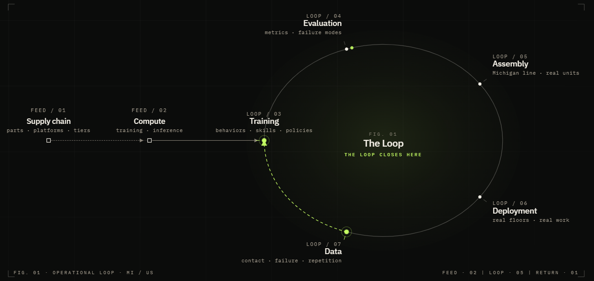

ToolTwin is the visible tip of a bigger idea: a synthetic-data & robot-training platform that plugs into Omnipresent Robotics' operational loop. This page explains the technology landscape, where MeetKai operates, and what's built so far.
Omnipresent's loop runs from supply chain to deployment and back. MeetKai plugs into two stations — Training and Data — the part that turns robots into capable workers.

Modern robot-learning is built from four layers that sit on top of each other.
NVIDIA's platform for physically-accurate 3D worlds, based on the OpenUSD scene format — the "engine and file standard" for industrial digital twins.
Where our 3D artists' assets & scenes live.NVIDIA's robotics stack on Omniverse. Isaac Sim simulates robots and generates synthetic training data; Isaac Lab trains the AI policies.
Turns our 3D data into robot skills.AgiBot's open-source simulation platform, built on Isaac Sim and tuned for humanoid manipulation — LLM scene generation, large datasets, validated sim2real for the G1/G2.
On-brand: Todd buys AgiBot robots.Train a robot's brain entirely in simulation and deploy on a real robot — bridged by domain randomization (varying lighting, textures, physics, positions).
Why synthetic data is valuable.MeetKai feeds the bottom (3D assets) and operates the middle (simulation + training).
Two layers — one is the recurring business, the other is the on-ramp that brings people to it.
A dedicated, GPU-backed service that generates synthetic 3D data, trains robot policies in simulation, and validates sim2real transfer to AgiBot hardware.
Describe a tool in plain language → an AI writes parametric CAD → you get a printable STL + a web/sim GLB → tune it → send it straight into training.
A working web prototype with a real AI + CAD backend, and a faithful mock-up of the heavy training engine — the right order to validate the funnel before investing in the full GPU stack.
Describe → Tune → Export, with a live 3D viewport. A real AI service (OpenAI) returns a parametric spec and even invents new parameters from the prompt; a real CadQuery service returns STL + GLB + print stats.
Placeholder: the CAD geometry is simple for now — real recipes come next.Robot → Task → Train: pick an AgiBot G1/G2, attach your tool, set domain randomization & policy, launch, and watch a live dashboard (episodes, success rate, sim2real gap).
This is the human web layer; it doesn't yet run real simulations.Two cloud services deployed: the OpenAI-driven AI bot and the CadQuery build service. The frontend degrades gracefully to offline mode if they're unavailable.
Built on Node, Python/FastAPI, and CadQuery.The explanation above is best understood by using the prototype — generate a tool, then train a robot to use it.